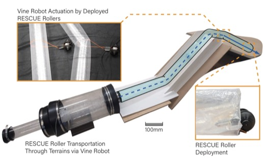

About Me
Hi! I am a third-year PhD student at the Robotics Institute at Carnegie Mellon University, advised by Prof. Zeynep Temel. Previously, I completed my M.S. in Robotics at the University at Buffalo under Prof. Ryan St. Pierre, where I built sub-gram autonomous millirobots with multimodal locomotion.
My research lies at the intersection of robot design and robot learning. I design transformable, morphologically adaptive robots and train them using reinforcement learning to traverse complex, multi-terrain environments. I am particularly interested in sim-to-real transfer, mechatronics, and the co-design of body and behavior.
Outside of research, I enjoy working out, cooking, singing, and playing guitar.
News
- Jun 2026 Paper accepted to IEEE RA-L: “Physical coupling for collaboration in heterogeneous robot teams.”
- May 2026 Paper accepted to IEEE ICRA 2026: “Terraskipper: A centimeter-scale robot for multi-terrain skipping and crawling.”
- Apr 2026 Paper accepted to IEEE RoboSoft 2026: “From fold to function: Dynamic modeling and simulation-driven design of origami mechanisms.”
- May 2025 🏆 Best Poster Award at ICRA 2025 Amphibious Robotics Workshop for PuffyBot.
- Nov 2024 PuffyBot preprint posted on arXiv: arXiv:2511.09885.
- 2024 Received the Dean's Graduate Achievement Award at CMU for excellence in research and technical publications.
- May 2024 🏆 Best Poster Award at ICRA 2024 Unconventional Robot Workshop for the springtail-inspired microrobot.
- May 2024 Paper published at IEEE ICRA 2024: “Multi-modal jumping and crawling in an autonomous, springtail-inspired microrobot.”
- Mar 2024 Paper published in IEEE RA-L: “Buffalo Byte: A highly mobile and autonomous millirobot platform.”
Publications
Full list on Google Scholar.

Teaching
15-482: Autonomous Agents
Teaching Assistant · Carnegie Mellon University
16-235: Fantastic Robots and How to Fold Them
Teaching Assistant · Carnegie Mellon University